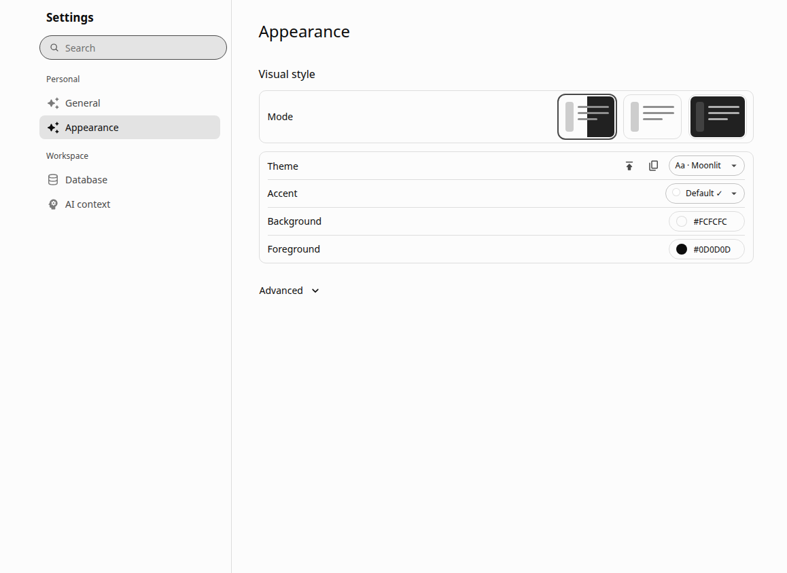
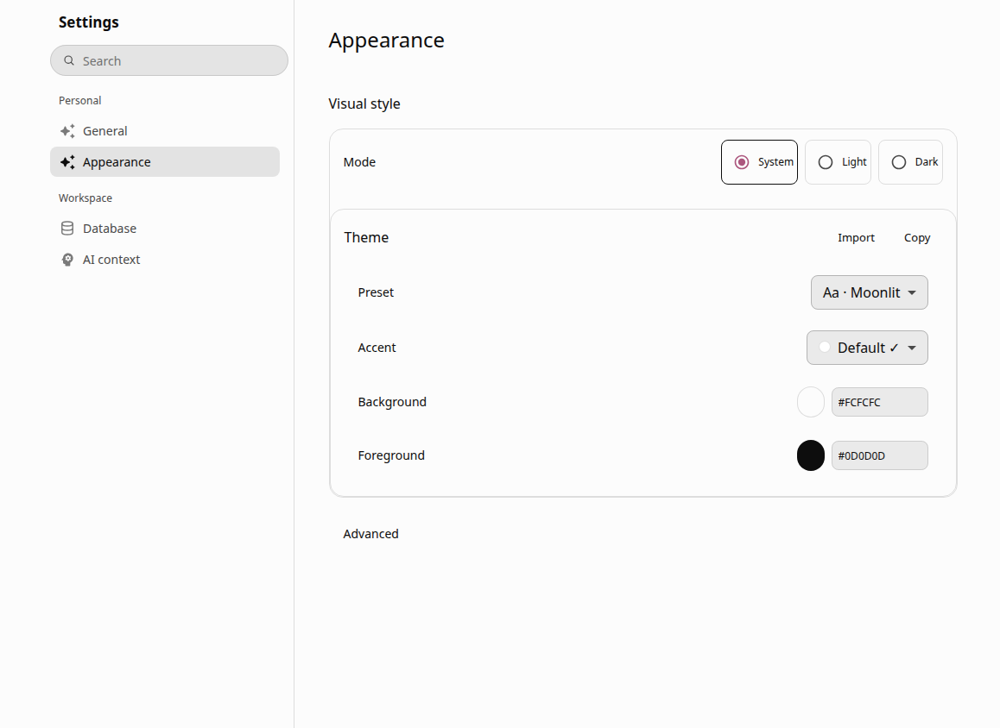
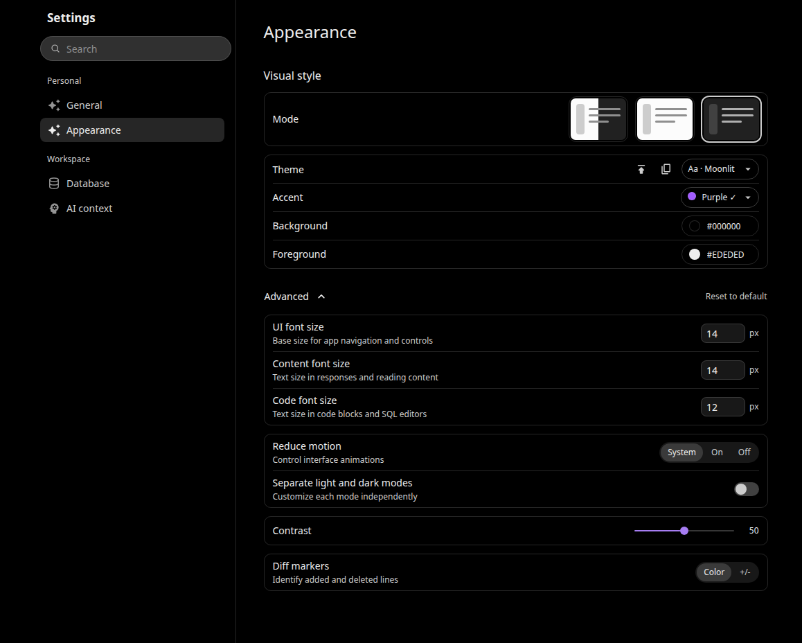
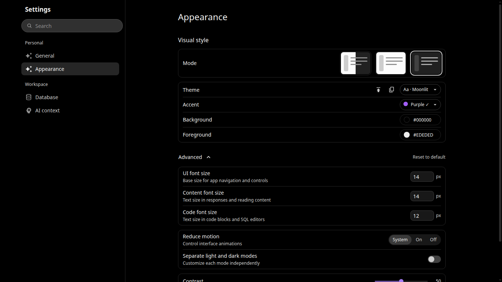
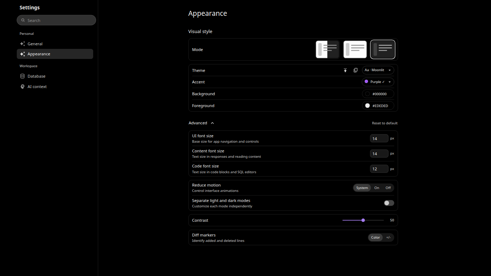

Moonlit Appearance: before and after
Actual components captured in an isolated local fixture with the composer, SQL editor and Perspective mounted. The comparison pairs use the same viewport, System/Light mode, Moonlit/Default profile, font sizes 14/14/12, collapsed Advanced state and 100% rendering scale. Drag the divider to inspect hierarchy and spacing changes.


Open before at native size · Open after at native size


Dark, Purple, Advanced expanded · 100%
Moonlit approximation of the supplied black/neutral target, not an exact Vercel preset. Background #000000, ink #EDEDED, contrast 50, sizes 14/14/12. Unsupported prose/full-width rows are omitted.

1365 × 768 at 100%, and an 80% scale emulation
The second capture uses a 1706 × 960 CSS viewport and device scale 0.8, producing approximately 1365 × 768 image pixels. This is a rendering-scale emulation, not a claim that browser toolbar zoom or the missing reference screenshot's device scale was recovered. Production CSS uses no zoom or transform.


The reference image itself is absent from this workspace's attachment; the written correction document supplies the target hierarchy. These images compare the real implementation before and after, not pixel differences against the unavailable reference image.